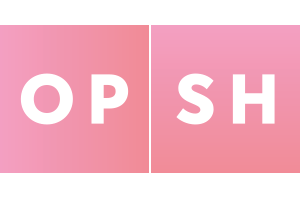

Hi, I'm Patrick
Briefly, my main areas of interest are:

R&D Intern
August 2015 - September 2015
What I did:
- Developed internal tools
- R&D for stock solutions
- Product planning & strategy
Things I learned
- Small teams move fast
- Building things is cool, but I didn't like backend development day-to-day 😓
- Working at a startup allows you to learn a lot about business as well as tech
Frontend Developer
July 2016 - September 2016
What I did
- Implemented designs as user interfaces
- Working across a range of projects for clients
- Communicating changes & progress to clients
- Worked with the team on decision making
- Some Android, some backend, some bug fixing
Things I learned
- Working with a designer was 👌
- Small companies are intense, but the people are amazing
- Imposter syndrome doesn't go away after one job - I wrote a blog post on it before I left
- Passionate people make the workday a breeze
Questions?
(About anything really)